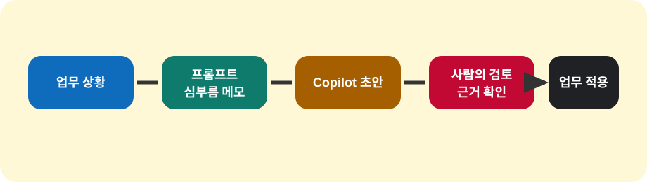

AX Copilot 병아리반 강사용 교재 - Thinkervis판
이 버전은 수업 설계와 운영 루브릭을 강화한 별도 판입니다. 통파일이 아니라 챕터별 페이지로 나눈 웹 교재입니다. 각 장은 초보 강사가 먼저 읽고, 수업에서 그대로 따라 말하고, 프롬프트를 복사해 실습할 수 있게 구성했습니다.

여러분은 혹시 Copilot이라는 말을 들어보았나요? 이름만 들으면 비행기 조종석의 부조종사처럼 느껴지기도 합니다. 실제로도 아주 비슷합니다. Copilot은 여...
프롬프트는 어려운 주문서가 아닙니다. 쉽게 말해 ‘업무 심부름 메모’입니다. 사람에게 심부름을 시킬 때도 무엇을, 왜, 누구에게, 어떤 모양으로 해달라는지 알려줘...
문서 요약은 Copilot 수업의 첫 성공 경험을 만들기 좋습니다. 하지만 ‘요약해줘’에서 끝나면 얕은 수업이 됩니다. 좋은 요약은 다음 행동으로 이어져야 합니다...
메일은 단순한 글쓰기가 아닙니다. 상대와의 관계, 요청의 강도, 내가 약속할 수 있는 범위, 다음 행동이 모두 들어가는 작은 업무 문서입니다....
데이터 실습은 재미있지만 위험합니다. Copilot이 숫자를 말하면 그럴듯해 보이기 때문입니다. 데이터 수업의 핵심은 ‘분석해줘’가 아니라 ‘어떤 기준으로 분석했...
HTML MVP 실습은 코딩 수업이 아닙니다. 말로만 설명하던 아이디어를 한 화면으로 보여주고, 사람들이 같은 그림을 보며 이야기하게 만드는 수업입니다....
좋은 자료가 있어도 강사가 준비하지 않으면 수업은 흔들립니다. 이 장은 강사가 수업 전날, 수업 시작, 실습 중, 마무리에서 무엇을 말하고 확인해야 하는지 정리한...
이 장은 강사가 수업 중 바로 꺼내 쓸 수 있는 프로젝트 모음입니다. 각 프로젝트는 상황 설명, 첫 질문, 더 나은 질문, 강사용 멘트, 수강생 예상 반응, 마무...
초보 수강생은 질문을 많이 합니다. 질문이 많다는 것은 수업이 흔들린다는 뜻이 아니라, 수강생이 자기 업무에 연결해보고 있다는 뜻입니다. 강사는 질문을 막지 말고...